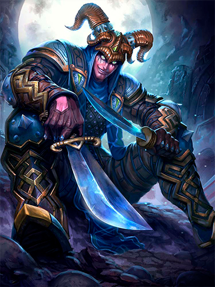

LOKI
The Trickster God
Villain. It’s a word used to describe those that break the rules, that take what they want, and care nothing for those hurt along the way. Loki, the trickster God, would say villainy is nothing more than a point of view.The point of view of fools too mindless to seize opportunity.Of course, with Loki now on the loose, the implications are dire. The end of times may be at hand. The final battle, Ragnarok, possibly on the horizon, for it was foretold that Loki would break free of his prison and herald the horrific final battle that would leave the Gods slain, the heavens sundered, and the world in ashes. None are more eager for that time of chaos than Loki.Before his confinement, Loki’s malicious mischief managed to affect every God in ways both beneficial and terrible. Yet Loki’s most heinous act was in the death of the God of light, Baldr.Baldr’s prophetic dreams showcased his own death. Fearful for her son, Frigg forced all objects of the world to swear never to harm him. All save mistletoe. Cruelly amused, Loki forged a spear from the plant and provided it to Baldr’s brother Hodr. The Gods had a new favorite game, hurling objects at Baldr and laughing as they harmlessly ricocheted. So Hodr threw the spear, but, to everyone’s horror Baldr was impaled. Hel agreed to release Baldr from the underworld if all creatures of the world mourned the God of Light. And all did, save one crone who refused. So Baldr died.When it was discovered the crone was Loki in disguise, the furious Gods bound him in entrails and hung a venomous serpent overhead. Loki’s wife, Sigyn, collected the dripping venom in a bowl, but when she was forced to empty it, Loki was struck, causing such anguish his thrashing would shake the world.But now Loki is free and already wreaking havoc. If the prophetic Volva are correct, and they always are, then the end of all things has finally come.
1
Vanish
Loki disappears in a puff of smoke. While invisible, he moves faster, removes Slow effects, and gains immunity to Slow effects. His next Basic Attack from Stealth (or for 2s after) applies a Bleed to his target, dealing damage every .5s and reveals Loki. If Loki takes damage while in stealth he will be revealed for .33s.
Damage per Tick: 30/45/60/75/90 (20% of your Physical Power)
Stealth Duration: 4s
Damage Duration: 2s
Stealth Movement Speed: 35%
2
Agonizing Visions
Loki summons a vision of his tortured past at a target location for 4s. Enemies in range of the vision feel the poison themselves, taking damage and having their Damage Dealt reduced. This effect stacks up to 4 times. If an enemy gets 4 stacks they become Blinded, allowing Loki to benefit from Behind You! from any direction for 3s.
Damage: 13/18/23/28/33 (+15% of your Physical Power)
Damage Dealt: 5% for 2.5s
3
Flurry Strike
Loki unleashes a flurry of 5 dagger strikes quickly in front of him, damaging and slowing enemies by 15% for 3s. After this flurry he winds up for a final heavy strike that deals higher damage and slows enemies by 30% for 3s. Loki cannot be knocked up while firing this ability. This ability can benefit from Behind You!
Flurry Damage: 19/28/37/46/55 (+25% of your Physical Power)
Final Damage: 55/75/95/115/135 (+70% of your Physical Power)
4
Assassinate
Upon activation, Loki teleports to his ground target location. If an enemy god is within the radius, Loki will slice that target doing damage and crippling them for 1s. After he teleports he will wind up a heavier strike, damaging all enemies in front of him and stunning them.
Cripple Damage: 70/105/140/175/210 (+35% of your Physical Power)
Stun: 1s
Heavy Damage: 100/145/190/235/280 (90% of your Physical Power)
PASSIVE
Behind You!
Loki deals more damage from his Basic Attacks when hitting enemies from behind. His Basic Attacks also utilize a 5 swing progressive chain.
Bonus Damage: 15%
ITEMS
Bubma's Spear
Jottuns Cunning
Shadowdrinker
Hydras Lament
The Crusher
Heartseeker
SKINS
Golden
NORMAL
Infiltrator
NORMAL
Joki
NORMAL
Ssslither
NORMAL
Stealthed Slayer
UNLIMITED
Croaki
UNLIMITED
Agent of Darkness
LIMITED
Last Laugh
LIMITED
Dashing Deceiver
EXCLUSIVE
Grim Mariachi
EXCLUSIVE
Headless Norseman
EXCLUSIVE
HRX
EXCLUSIVE
Hyperspace
EXCLUSIVE
Charms
EXCLUSIVE
Rivals
EXCLUSIVE
the Trickster
EXCLUSIVE
White Death
EXCLUSIVE
Radical Raphael
CROSSOVER
Raphael
CROSSOVER
retro Raphael
CROSSOVER
Tokyo Machine
CROSSOVER